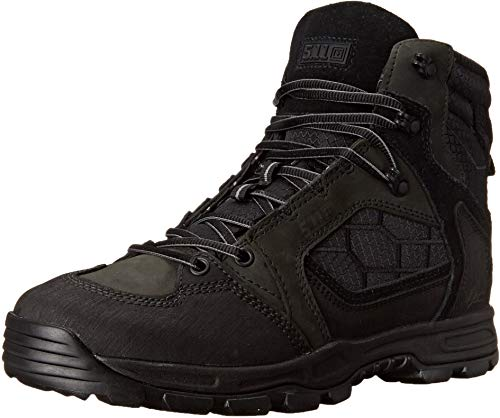

The 5.11 Men's XPRT 2.0 Urban tactical boots are the perfect boots for all forms of enforcement. Whether it be you are a soldier or if you are part of the police force, these boots allow for versatality in the field. The soft soles allow for easy chasing, and it is waterproof and quite light allowing for easy manuvering through wet environments. The high ends of the boots allow for no outside materials to get in. These boots are the pinnacle of tactical gear.
My experience with these tactical boots are great. It has never worn out, and it doesn't lost it's central integrity. The perfect soles allow it to outclass any other boots in this area of the market. This is the perfect type of boots for pursuit!